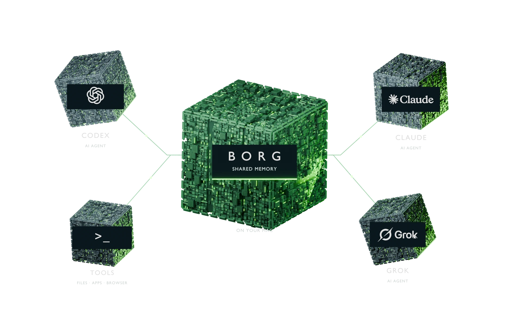

Free and The code is public. Anyone can read it, and you can use it for free under the MIT license.
Runs on your Mac
Codex · Claude · Grok
Your AI forgets. BORG remembers.
BORG gives your AI coding agents one shared memory that lives on your Mac. Codex saves what it learns about your project there and gets it back the next time it starts work. Claude Code and Grok can join after a few setup steps. Stop explaining your project from scratch.
Needs a Mac with an M-series chip (M1 or newer) and 20 GB of free space. Will it run on my Mac?

The difference
Monday you explain. Tuesday it already knows.
Example · without BORG
Monday
Our app uses Supabase for logins and Tailwind for styling. Please never use inline styles.
Got it. I'll keep that in mind.
Tuesday · new chat
Add a settings page.
Sure. Which login system and styling library does your app use?
You explain it all again.
Example · with BORG
Tuesday · new chat
Add a settings page.
BORG added 3 notes from Monday
On it. I'll use your Supabase login and Tailwind styles, with no inline styles, like you asked.
It picks up where you left off.
Example conversation. Real replies depend on your project and your AI tool.
How it works
Three steps, all on your Mac.
Your agent works as usual.
As Codex works on your project, BORG saves useful facts from each session, for example which tools you use and what you decided.
BORG files it away.
Notes go into a private memory in one folder on your Mac. Small AI models, also on your Mac, sort the notes and link related facts.
Next time, it remembers.
When Codex starts a task, BORG hands it the notes that matter for that task.
OpenAI's coding agent. You talk to it in Terminal and it writes and runs code for you. is connected for you during setup. Anthropic's coding agent for Terminal. and Grok connect with a few extra steps, then search the same memory.
What you get
One install. Three parts.
123
1
Memory
Saves what your agents learn and finds the right note again, even when you word it differently.
Semantic memory (mem0 with Qdrant) and a temporal knowledge graph (Graphiti with FalkorDB), run by local models through Ollama.
2
Tools
Lets your agents work on your Mac: open files, run commands, run long jobs and use their own browser. macOS asks you before an agent can control other apps.
A native MCP connector with file, command, durable-job, browser and desktop tools.
3
Teamwork
Your agents can message each other and keep one shared task list, so everyone can see what's done and what's next.
Agent Inbox for messages and assignments, Beads for the task graph, and a conductor that runs agent work.
Also included, and switched off: three small trained models for research.
Will it run on my Mac?
Answer three questions.
Your chip and memory are in the Apple menu under About This Mac. Free space is in System Settings → General → Storage.
Get started
Let your AI set it up.
The easiest way: give your AI agent the instructions and let it do the typing. The message below asks it to check your Mac first and explain each step before it runs it.
Let your AI do it
Open Codex or Claude Code in An app on every Mac for typing commands. Press ⌘ and Space, type Terminal, then press Return..
Use the AI coding agent you already have.
Paste this message.
Message for your AI agent
Read https://borg.utlyze.com/llms.txt and the installation runbook it links to. Help me install BORG on this Mac. Check my Mac first, explain each step in plain words before you run it, use my own accounts, and tell me what works and what still needs setup.
Answer its questions.
It installs BORG, helps you sign in to Codex and tells you what works.
Type it yourself
In the third line, replace yourname with a short lowercase name for you, like jamie.
A short lowercase name for you, like jamie. BORG uses it as your owner ID. We fill it into the commands below.
Want every option, including ChatGPT on the web and other machines? Read the install guide.
You're set up when…
"$HOME/.borg/bin/borg" doctor says you're ready. If something still needs setup, it tells you what.
Then try it
Tell Codex one fact about your project. Start a new chat and ask about it.
Good to know
Questions people ask first.
Is BORG free?
Yes. BORG is open source under the MIT license. You use your own AI accounts, such as the one you use for Codex, and their normal costs apply.
Where is my data stored?
On your Mac, in one private folder (~/.borg). BORG never connects to our setup or to anyone else's.
When your AI uses a memory, that note becomes part of your chat with that AI's company, like anything you type.
Will it slow down or change my Mac?
BORG runs several background services that only your Mac can reach. Its local AI models use memory, so a Mac with more memory runs it more comfortably.
macOS asks your permission before an agent can control other apps or see your screen.